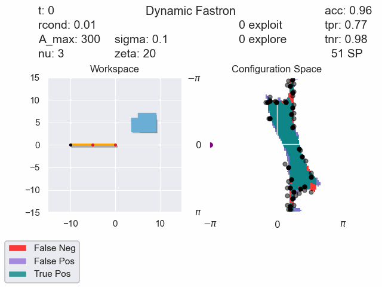
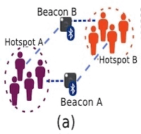

|
Saikiran Komatineni
I am an M.S. student at the ECE department at UCSD, specializing in Intelligent Systems and Robotic Control.
At UCSD I am working at the ARC lab on the Fastron for Dynamic Uncertain Environments project, advised by Dr. Michael Yip. I completed my B.S in Electrical Engineering at UCSD. I completed one CO-OP and one summer internship at Qualcomm, where I worked on developing ML models for XO oxcilator correction and model quantization for hardware accelerators.
Email /
CV /
Google Scholar /
Github
|
|
|
Research
I'm interested in the intersection of Artificial Intelligence and Robotics. Specifically, I want to conduct research in the domain of multi-agent planning and coordinationnin in realistic human-involved environments. I believe that there is a lot we can still learn from interactions involving natural beings and that there are fundamental problems that need to be solved before we can see robots working together, and with humans, harmoniously to autonomously tackle complex problems.
|
|

|
UCSD Advanced Robotics and Controls Lab
Advisor: Dr. Michael Yip
Graduate Student Researcher
San Diego, CA • Feb 2021 - Present
Technical Report
Designed and Developed an extension to Fastron, a kernel-perceptron based proxy collision checking algorithm.
The previous method randomly sampled around support vectors to predict their new locations. We developed an equation to relate obstacle motion to support vector translation using inverse kinematics of a subsection of the robot arm. With the new heuristic, collision accuracy increased by 20%.
Developed an Unscented Kalman Filter based tracking algorithm to track obstacles. To accommodate for the noise in observation and tracking, I modified the original Fastron training algorithm by formulating support vectors as random variables.
|
|

|
Wireless Communications Sensing and Networking Lab
Advisor: Dr. Dinesh Bharadia
Undergraduate Student Researcher
San Diego, CA • Mar 2020 - Jun 2020
BluBLE, space-time social distancing to monitor the spread of COVID-19
Aditya Arun, Agrm Gupta, Shivani Bhakta, Saikiran Komatineni, Dinesh Bharadia
Used gaussian mixture model analysis, k-means, spectral clustering and other ML algorithms to categorize Bluetooth signals by transmitter-receiver distance. We started with simple linear classifiers on raw Bluetooth RSSI data and progressed towards more complex ones as more data became available. As part of this project, we developed a social distancing app and it was innovative because it was the first to use crowdsourced dats to train and iteratively improve the classifier
|
Website sourced from here.
|
{kind=link}